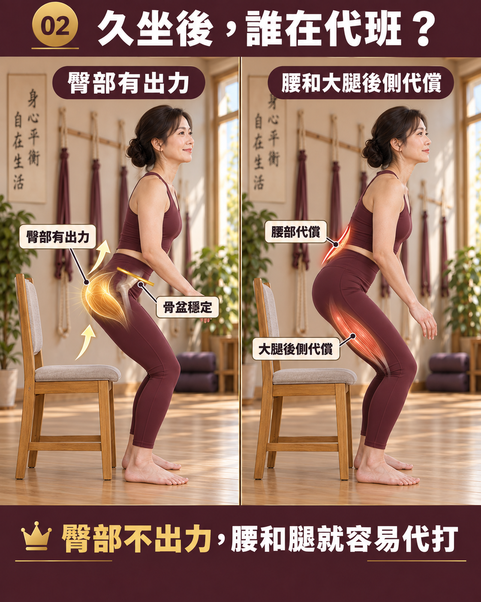
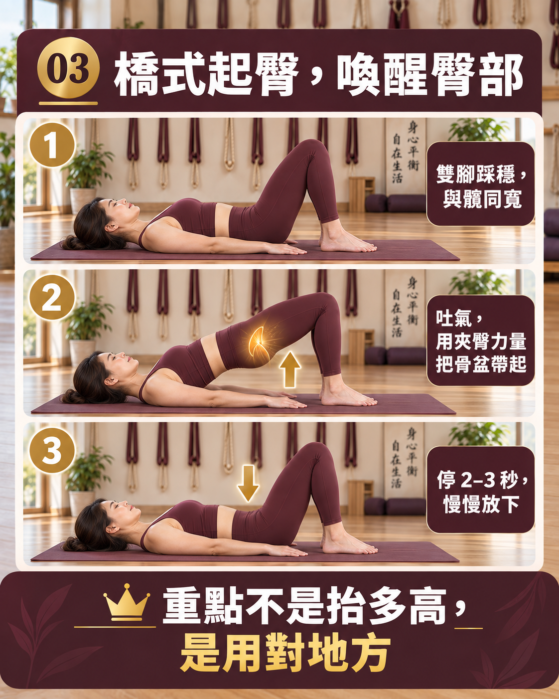

久坐讓屁股「失憶」了嗎？先看懂臀肌鈍化與骨盆支撐的真實機制
- 久坐後站起腰痠、腿後側緊繃，常被稱為「臀肌失憶（Gluteal Amnesia）」，實為神經活化度降低的長期適應。
- 臀大肌負責骨盆後側支撐與髖伸展；當它怠工時，腰部豎脊肌與大腿後側膕旁肌常被迫過度代償。
- 單純靠猛力深蹲或走路，在神經路徑未啟動前容易繼續用代償側用力，應從低負重、專注發力感的練習著手。
- 壁繩提供穩固的骨盆支點，能安全伸展緊縮的髖前側，並在骨盆中立位置重新喚醒臀肌動作感知。
明明沒搬重物，坐了一整天辦公室站起來腰卻發痠；大腿後側總是繃得緊緊的，拉筋也覺得舒緩有限。很多人以為自己只是單純核心無力或柔軟度不好，但往往忽略了整天被壓在椅子下、缺乏主動徵召的大肌群——臀部。
什麼是「臀肌失憶」？神經與肌肉的交互抑制
在人體運動科學中，「臀肌失憶（Gluteal Amnesia / Dead Butt Syndrome）」是一個很形象的說法。它並非肌肉纖維壞死或真的失去了功能，而是神經肌肉控制系統出現了適應性的活化遲鈍：
當我們每天連續坐著 7 到 9 個小時，大腿骨相對於骨盆保持屈曲，骨盆前側的髂腰肌持續縮短；根據生理學上的「交互抑制（Reciprocal Inhibition）」原理，當一側肌肉持續緊縮時，大腦會主動抑制拮抗側（後側臀大肌）的神經訊號發送。長年累月下來，大腦與臀肌之間的發力路徑就像生鏽的線路，變得極難在站立或走動時主動上線。
主力罷工，誰在背後默默「代打」？
臀大肌是人體體積最大、力量最強的骨盆後側穩定者。當它失去主動支撐時，身體為了維持直立行走，會自動啟動代償機制：
- 腰部豎脊肌過勞：為了維持骨盆不往前塌陷，下背豎脊肌整天被迫持續出力拉住軀幹，形成「累到放不下來」的慢性痠痛。
- 大腿後側膕旁肌緊繃：負責協助髖伸展的膕旁肌被迫扛下原本屬於臀大肌的工作，長期過度拉扯導致腿後側肌腱僵硬。
- 骨盆前傾傾向增加：缺乏臀大肌向後下的牽引，骨盆更容易順著前側緊縮的髂腰肌往前倒，小腹在視覺上也顯得較為突出。
腰痠與大腿後側緊繃，很多時候不是它們太緊需要拚命拉伸，而是因為屁股沒有正常分擔工作。喚醒臀肌，是減輕下背代償負擔的關鍵基石。

壁繩怎麼幫忙？在安全支點中找回發力感
喚醒沉睡的臀肌，關鍵不是一開始就猛做負重訓練，而是「先建立清楚的本體感覺」。當神經連結不順時，直接做深蹲往往只會讓大腿前側與腰部代償更多。
壁繩瑜伽能提供穩定的骨盆托持與外部支撐，讓練習者在不需擔心失衡的狀態下，溫和地將髖前側緊繃的髂腰肌延展開來；同時在繩子的彈性阻力輔助下，精準體會「屁股深層收緊推進」的感覺，而不是靠後仰折腰來借力。想更清楚骨盆位置與核心的協同關係，可參考骨盆前傾就等於小腹凸？先看懂骨盆位置與核心用力的真實關係。
想了解自己站姿的骨盆與下肢排列狀態？
AI 體態檢測透過 2D 前後與側面站姿拍攝，客觀呈現骨盆高低、側傾與身體鉛錘線的幾何參考數據，幫助你與老師當面釐清日常站立受力習慣。（非醫療診斷或神經肌電量測）
預約首次 NT$299 AI 體態檢測今天就能做的一個微型練習：安全橋式起臀
在家或瑜伽墊上進行這個練習，重點在於「感受度」而非抬升的高度：
- 平躺屈膝，雙腳踩穩於地面與髖同寬，雙手平放身體兩側。
- 動作開始前，骨盆微微後傾，讓下背自然平貼於地面，收住微弱的下腹核心。
- 吐氣時，專注以「兩側臀部收縮」的力量將骨盆平穩帶離地面，直到膝蓋、髖部與肩膀呈一條自然斜線即可。
- 在頂點停留 2 秒，感覺臀大肌有實質出力感（若感覺全在腰痠，表示抬得太高或腰部代償），隨後緩慢下落，重複 8 到 10 次。

臀部肌肉的神經活化需要持之以恆的日常提醒，每天規律做 1 到 2 組，慢慢幫助大腦找回正確的動作記憶。
本文為體態與姿勢的一般衛教與練習分享，非醫療診斷或治療。若伴隨下肢神經放射麻痛、椎間盤突出急性期或嚴重關節病史，請先諮詢合格醫療專業人員。
常見問題
什麼是「臀肌失憶」？肌肉真的會忘記怎麼出力嗎？
「臀肌失憶（Gluteal Amnesia）」是一種形象化的生理描述，並非肌肉神經真的壞死。長時間坐姿讓髖關節前側持續縮短，神經系統產生「交互抑制（Reciprocal Inhibition）」效應，使後側臀大肌神經活化度降低、反應遲鈍，導致站立或走動時難以自發性地主動發力。
臀大肌鈍化為什麼會引發腰痠與大腿後側緊繃？
臀大肌是人體最強大的髖伸展肌與骨盆後方支撐者。當臀肌怠工時，身體為了完成走路推進或維持站立，會被迫徵召下背的豎脊肌與大腿後側的膕旁肌前來代償；由於這些肌群構造並不適合承受全天候的重度負載，長期過勞便會轉化為慢性腰痠與緊繃。
靠多走路或多爬樓梯，就能自動把臀肌練醒嗎？
不一定。如果神經與臀肌的連結尚未被主動喚醒，走路或爬樓梯時身體往往會繼續依賴已經習慣代償的股四頭肌、膝蓋與腰椎來出力，反而可能讓下背與膝蓋更疲勞；建議先透過低負重、專注本體感覺的動作重新接通神經連結。
壁繩練習如何協助喚醒沉睡的臀部肌肉？
壁繩提供了穩定的骨盆承托與反作用力支點，練習者能在站姿或懸掛中放鬆緊縮的髖前側，並在骨盆維持中立的前提下精準練習臀部收縮，避免為了用力而習慣性用腰部後凹代償。
居家練習橋式起臀時，如何確認是屁股在出力而不是腰？
平躺屈膝踩地時，骨盆先微微後傾使下背自然貼平地面；吐氣時專注將注意力放在臀大肌收縮，帶動臀部平穩離地，身體從肩膀、髖部到膝蓋呈一直線即可。切勿過度將腹部或腰椎向上頂起，若感到下背發酸，代表抬離高度過高或腹部核心失守。